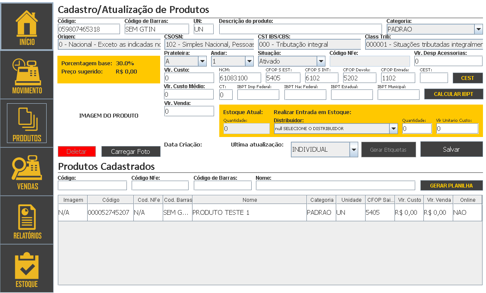
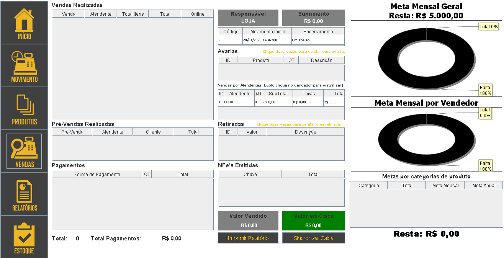
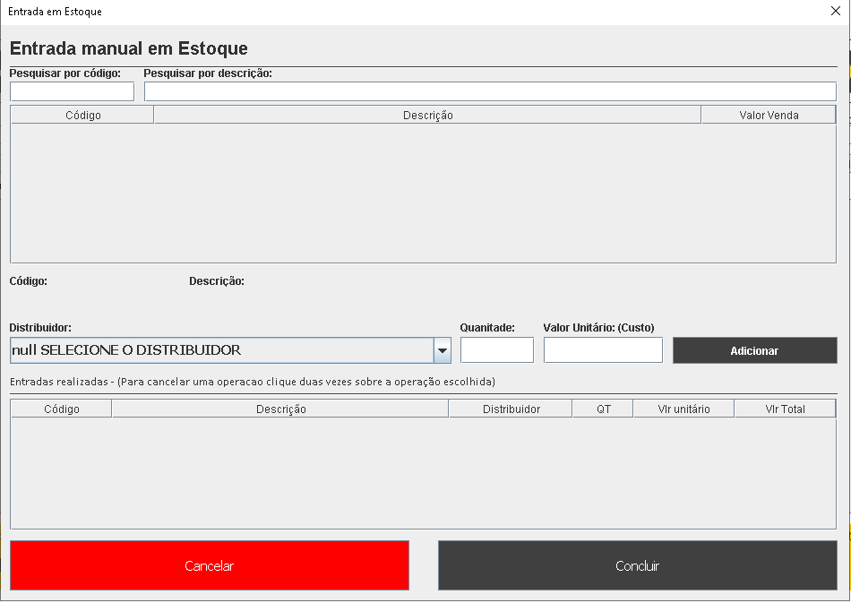
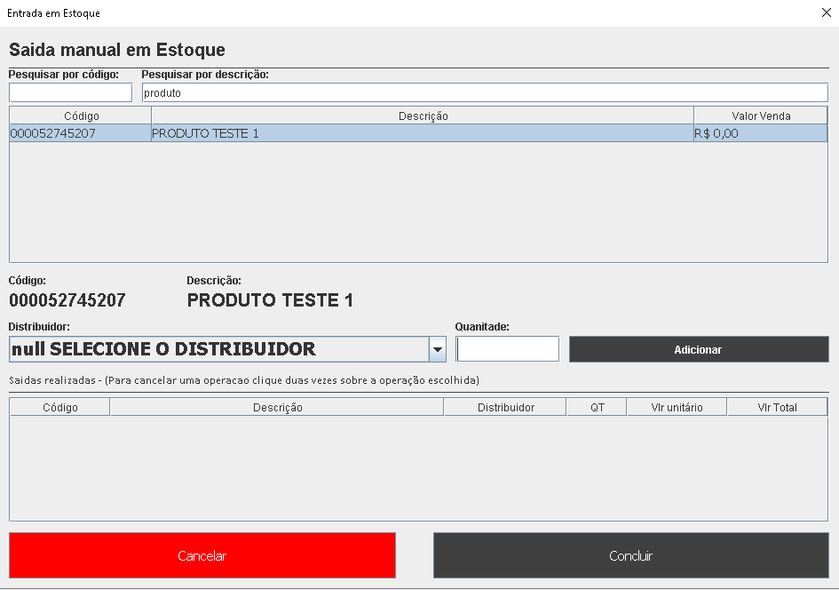
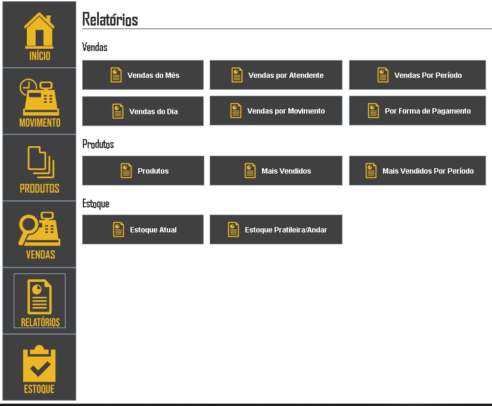
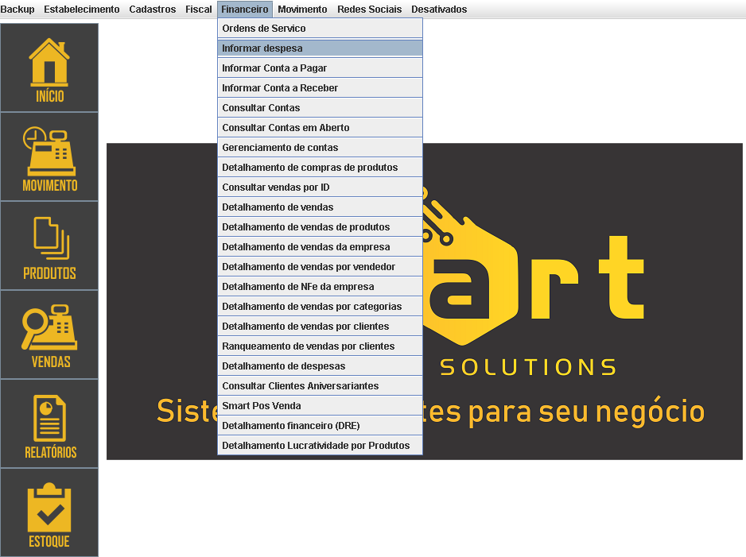
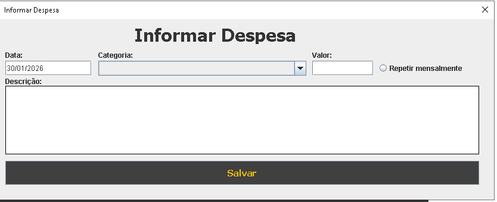

Acesse o menu Produtos, preencha as informações necessárias e salve para concluir.
Sim. O sistema permite o cadastro automático de produtos por meio de importação ou integrações disponíveis.

As vendas podem ser visualizadas nos menus Vendas ou Fluxo de Caixa.
No histórico de vendas, selecione a venda (duplo clique) e escolha Cancelar, desde que o usuário tenha permissão.

1.Clique no menu Estoque, Entrada em Estoque.

2.Selecione o produto, informe quantidade e custo unitário, depois clique em Adicionar e Concluir.
1.Clique no menu Estoque, Saída em Estoque.

2.Selecione o produto (Duplo clique), informe quantidade e depois clique em Adicionar e Concluir.
Acesse Relatórios de Vendas e filtre pelo menu de vendas do mês desejado.
1.No menu Financeiro, selecione Informar Despesa.
2.Preencha os dados e salve.
Acesse Configurações > Gerar Backup.